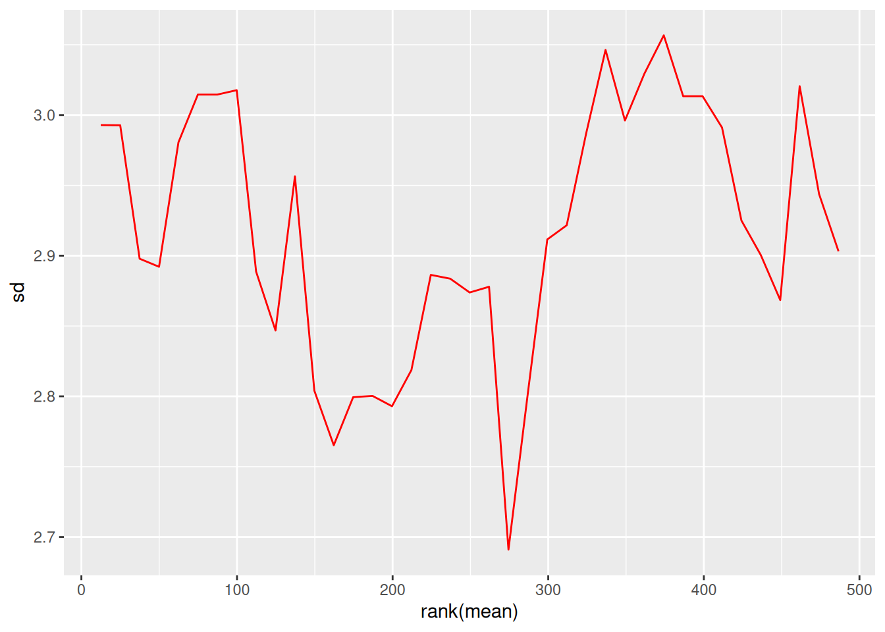
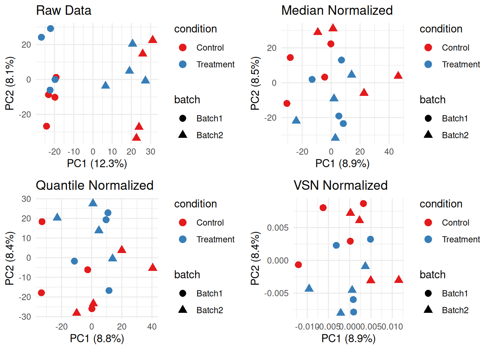
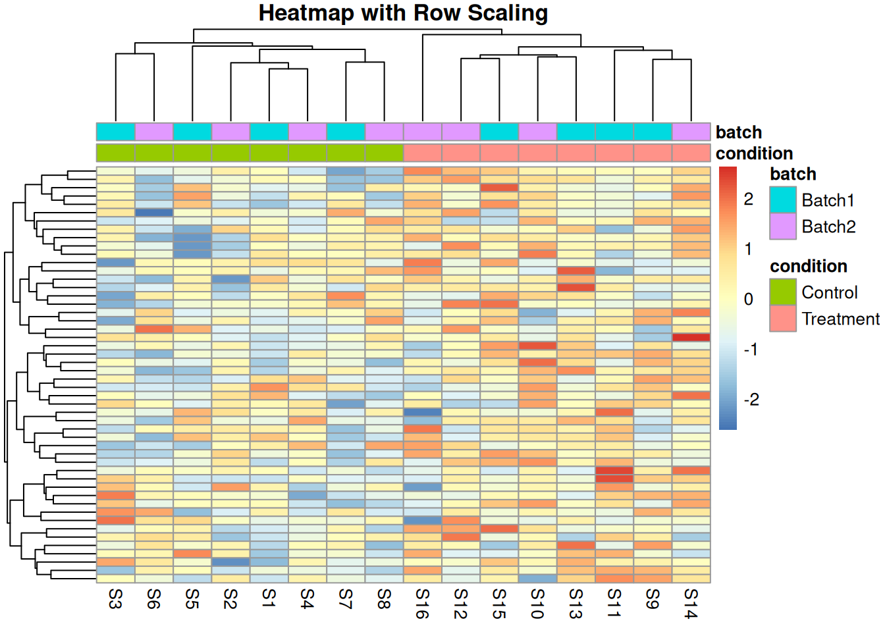
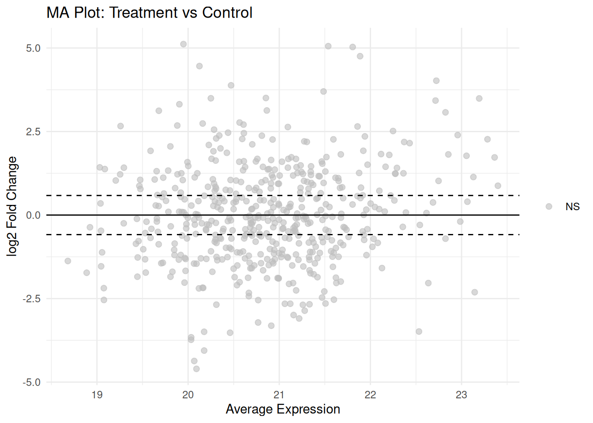

Day - 3 Preprocessing and Differential Expression
3.1 Learning Objectives
By the end of Day 3, you will be able to:
- Apply different normalization methods to proteomic data
- Perform batch effect correction
- Conduct differential expression analysis using limma
- Interpret and visualize differential expression results
- Create volcano plots and MA plots
3.2 Module 1: Data Preprocessing
3.2.1 Why Normalize?
Normalization removes systematic technical variation to:
- Make samples comparable
- Reduce technical noise
- Preserve biological signal
3.2.2 Loading Example Data
# Create example proteomic dataset with technical variation
set.seed(123)
n_proteins <- 500
n_samples <- 16
# Sample metadata
sample_metadata <- data.frame(
sample_id = paste0("S", 1:n_samples),
condition = rep(c("Control", "Treatment"), each = 8),
batch = rep(c("Batch1", "Batch2"), times = 8),
replicate = rep(1:8, times = 2),
stringsAsFactors = FALSE
)
# Generate base protein abundances
protein_matrix_raw <- matrix(
rnorm(n_proteins * n_samples, mean = 20, sd = 3),
nrow = n_proteins,
ncol = n_samples
)
rownames(protein_matrix_raw) <- paste0("P", sprintf("%05d", 1:n_proteins))
colnames(protein_matrix_raw) <- sample_metadata$sample_id
# Add biological effect (differential proteins)
de_proteins <- 1:50
protein_matrix_raw[de_proteins, sample_metadata$condition == "Treatment"] <-
protein_matrix_raw[de_proteins, sample_metadata$condition == "Treatment"] +
rnorm(50 * 8, mean = 2, sd = 0.5)
# Add batch effect
batch1_samples <- sample_metadata$batch == "Batch1"
protein_matrix_raw[, batch1_samples] <- protein_matrix_raw[, batch1_samples] + 1.5
# Add some missing values
missing_idx <- sample(1:length(protein_matrix_raw), size = 500)
protein_matrix_raw[missing_idx] <- NA
cat("Raw data dimensions:", dim(protein_matrix_raw), "\n")
#> Raw data dimensions: 500 16
cat("Missing values:", sum(is.na(protein_matrix_raw)), "\n")
#> Missing values: 5003.2.3 Handling Missing Values
# Strategy 1: Remove proteins with too many missing values
threshold <- 0.3 # Remove if >30% missing
missing_per_protein <- rowSums(is.na(protein_matrix_raw)) / ncol(protein_matrix_raw)
filtered_proteins <- missing_per_protein <= threshold
protein_matrix_filtered <- protein_matrix_raw[filtered_proteins, ]
cat("Proteins after filtering:", nrow(protein_matrix_filtered), "\n")
#> Proteins after filtering: 499
# Strategy 2: Imputation (simple mean imputation)
protein_matrix_imputed <- protein_matrix_filtered
for (i in 1:nrow(protein_matrix_imputed)) {
missing_idx <- is.na(protein_matrix_imputed[i, ])
if (any(missing_idx)) {
protein_matrix_imputed[i, missing_idx] <- mean(protein_matrix_imputed[i, ], na.rm = TRUE)
}
}
cat("Missing values after imputation:", sum(is.na(protein_matrix_imputed)), "\n")
#> Missing values after imputation: 03.2.4 Normalization Methods
3.2.4.1 1. Median Normalization
# Calculate median for each sample
sample_medians <- apply(protein_matrix_imputed, 2, median, na.rm = TRUE)
global_median <- median(sample_medians)
# Normalize
protein_matrix_median <- protein_matrix_imputed
for (i in 1:ncol(protein_matrix_median)) {
protein_matrix_median[, i] <- protein_matrix_median[, i] -
sample_medians[i] + global_median
}
# Visualize before and after
par(mfrow = c(1, 2))
boxplot(protein_matrix_imputed, main = "Before Median Normalization",
las = 2, cex.axis = 0.7, ylab = "Abundance")
boxplot(protein_matrix_median, main = "After Median Normalization",
las = 2, cex.axis = 0.7, ylab = "Abundance")
3.2.4.2 2. Quantile Normalization
# Quantile normalization
protein_matrix_quantile <- limma::normalizeBetweenArrays(protein_matrix_imputed,
method = "quantile")
# Visualize
par(mfrow = c(1, 2))
boxplot(protein_matrix_imputed, main = "Before Quantile Normalization",
las = 2, cex.axis = 0.7, ylab = "Abundance")
boxplot(protein_matrix_quantile, main = "After Quantile Normalization",
las = 2, cex.axis = 0.7, ylab = "Abundance")
3.2.4.3 3. VSN (Variance Stabilizing Normalization)
# VSN normalization
vsn_fit <- vsn::vsn2(protein_matrix_imputed)
protein_matrix_vsn <- vsn::predict(vsn_fit, protein_matrix_imputed)
# Visualize mean-sd relationship
par(mfrow = c(1, 2))
vsn::meanSdPlot(protein_matrix_imputed, main = "Before VSN")
vsn::meanSdPlot(protein_matrix_vsn, main = "After VSN")
3.2.5 Comparing Normalization Methods
# PCA comparison
plot_pca <- function(data, title, metadata) {
pca_result <- prcomp(t(data), scale. = FALSE)
var_exp <- summary(pca_result)$importance[2, 1:2] * 100
pca_df <- data.frame(
PC1 = pca_result$x[, 1],
PC2 = pca_result$x[, 2],
condition = metadata$condition,
batch = metadata$batch
)
ggplot(pca_df, aes(x = PC1, y = PC2, color = condition, shape = batch)) +
geom_point(size = 3) +
theme_minimal() +
labs(title = title,
x = paste0("PC1 (", round(var_exp[1], 1), "%)"),
y = paste0("PC2 (", round(var_exp[2], 1), "%)")) +
scale_color_brewer(palette = "Set1")
}
# Compare all methods
p1 <- plot_pca(protein_matrix_imputed, "Raw Data", sample_metadata)
p2 <- plot_pca(protein_matrix_median, "Median Normalized", sample_metadata)
p3 <- plot_pca(protein_matrix_quantile, "Quantile Normalized", sample_metadata)
p4 <- plot_pca(protein_matrix_vsn, "VSN Normalized", sample_metadata)
library(gridExtra)
grid.arrange(p1, p2, p3, p4, ncol = 2)
3.2.6 Exercise 3.1: Apply Normalization
Apply all three normalization methods and:
- Calculate CV for each method
- Compare sample correlations
- Choose the best method for your data
# Solution
calculate_mean_cv <- function(data) {
cvs <- apply(data, 1, function(x) sd(x, na.rm = TRUE) / mean(x, na.rm = TRUE) * 100)
mean(cvs, na.rm = TRUE)
}
cat("Mean CV - Raw:", round(calculate_mean_cv(protein_matrix_imputed), 2), "%\n")
#> Mean CV - Raw: 14.1 %
cat("Mean CV - Median:", round(calculate_mean_cv(protein_matrix_median), 2), "%\n")
#> Mean CV - Median: 13.64 %
cat("Mean CV - Quantile:", round(calculate_mean_cv(protein_matrix_quantile), 2), "%\n")
#> Mean CV - Quantile: 13.67 %
cat("Mean CV - VSN:", round(calculate_mean_cv(protein_matrix_vsn), 2), "%\n")
#> Mean CV - VSN: 0.01 %
# Sample correlations
cor_raw <- mean(cor(protein_matrix_imputed)[upper.tri(cor(protein_matrix_imputed))])
cor_median <- mean(cor(protein_matrix_median)[upper.tri(cor(protein_matrix_median))])
cor_quantile <- mean(cor(protein_matrix_quantile)[upper.tri(cor(protein_matrix_quantile))])
cat("\nMean sample correlation - Raw:", round(cor_raw, 3), "\n")
#>
#> Mean sample correlation - Raw: 0.024
cat("Mean sample correlation - Median:", round(cor_median, 3), "\n")
#> Mean sample correlation - Median: 0.024
cat("Mean sample correlation - Quantile:", round(cor_quantile, 3), "\n")
#> Mean sample correlation - Quantile: 0.0243.3 Module 2: Batch Effect Correction
3.3.1 Detecting Batch Effects
# PCA colored by batch
pca_result <- prcomp(t(protein_matrix_quantile), scale. = TRUE)
var_exp <- summary(pca_result)$importance[2, 1:2] * 100
pca_df <- data.frame(
PC1 = pca_result$x[, 1],
PC2 = pca_result$x[, 2],
sample_id = colnames(protein_matrix_quantile)
)
pca_df <- merge(pca_df, sample_metadata, by = "sample_id")
# Plot by batch
p_batch <- ggplot(pca_df, aes(x = PC1, y = PC2, color = batch, shape = condition)) +
geom_point(size = 4) +
theme_minimal() +
labs(title = "PCA - Batch Effect Visible",
x = paste0("PC1 (", round(var_exp[1], 1), "%)"),
y = paste0("PC2 (", round(var_exp[2], 1), "%)")) +
scale_color_manual(values = c("Batch1" = "red", "Batch2" = "blue"))
print(p_batch)
3.3.2 ComBat Batch Correction
# Prepare for ComBat
batch_vector <- sample_metadata$batch
condition_matrix <- model.matrix(~condition, data = sample_metadata)
# Apply ComBat
protein_matrix_combat <- sva::ComBat(
dat = protein_matrix_quantile,
batch = batch_vector,
mod = condition_matrix,
par.prior = TRUE,
prior.plots = FALSE
)
# Compare before and after
pca_combat <- prcomp(t(protein_matrix_combat), scale. = TRUE)
var_exp_combat <- summary(pca_combat)$importance[2, 1:2] * 100
pca_df_combat <- data.frame(
PC1 = pca_combat$x[, 1],
PC2 = pca_combat$x[, 2],
sample_id = colnames(protein_matrix_combat)
)
pca_df_combat <- merge(pca_df_combat, sample_metadata, by = "sample_id")
p_combat <- ggplot(pca_df_combat, aes(x = PC1, y = PC2, color = batch, shape = condition)) +
geom_point(size = 4) +
theme_minimal() +
labs(title = "PCA - After ComBat Correction",
x = paste0("PC1 (", round(var_exp_combat[1], 1), "%)"),
y = paste0("PC2 (", round(var_exp_combat[2], 1), "%)")) +
scale_color_manual(values = c("Batch1" = "red", "Batch2" = "blue"))
library(gridExtra)
grid.arrange(p_batch, p_combat, ncol = 2)
3.3.3 Scaling Methods
# Z-score scaling (by protein)
protein_matrix_scaled <- t(scale(t(protein_matrix_combat)))
# Pareto scaling
protein_matrix_pareto <- t(scale(t(protein_matrix_combat))) / sqrt(apply(protein_matrix_combat, 1, sd, na.rm = TRUE))
rownames(sample_metadata) <- sample_metadata$sample_id
# Visualize effect of scaling
pheatmap(protein_matrix_combat[1:50, ],
scale = "row",
main = "Heatmap with Row Scaling",
show_rownames = FALSE,
annotation_col = sample_metadata[, c("condition", "batch"), drop = FALSE])
3.3.4 Exercise 3.2: Complete Preprocessing Pipeline
Create a complete preprocessing function that:
- Filters proteins with >30% missing
- Imputes missing values
- Applies normalization
- Corrects for batch effects
# Solution
preprocess_proteomics <- function(raw_data, metadata,
missing_threshold = 0.3,
norm_method = "quantile") {
# Step 1: Filter
missing_per_protein <- rowSums(is.na(raw_data)) / ncol(raw_data)
filtered_data <- raw_data[missing_per_protein <= missing_threshold, ]
cat("Filtered to", nrow(filtered_data), "proteins\n")
# Step 2: Impute
imputed_data <- filtered_data
for (i in 1:nrow(imputed_data)) {
missing_idx <- is.na(imputed_data[i, ])
if (any(missing_idx)) {
imputed_data[i, missing_idx] <- mean(imputed_data[i, ], na.rm = TRUE)
}
}
cat("Imputed", sum(is.na(filtered_data)), "missing values\n")
# Step 3: Normalize
if (norm_method == "quantile") {
normalized_data <- limma::normalizeBetweenArrays(imputed_data, method = "quantile")
} else if (norm_method == "median") {
sample_medians <- apply(imputed_data, 2, median)
global_median <- median(sample_medians)
normalized_data <- sweep(imputed_data, 2, sample_medians - global_median)
}
cat("Applied", norm_method, "normalization\n")
# Step 4: Batch correction
if ("batch" %in% colnames(metadata)) {
condition_matrix <- model.matrix(~condition, data = metadata)
corrected_data <- sva::ComBat(
dat = normalized_data,
batch = metadata$batch,
mod = condition_matrix,
par.prior = TRUE,
prior.plots = FALSE
)
cat("Applied ComBat batch correction\n")
} else {
corrected_data <- normalized_data
}
return(corrected_data)
}
# Apply pipeline
processed_data <- preprocess_proteomics(protein_matrix_raw, sample_metadata)
#> Filtered to 499 proteins
#> Imputed 495 missing values
#> Applied quantile normalization
#> Applied ComBat batch correction3.4 Module 3: Differential Expression Analysis
3.4.1 Introduction to limma
limma (Linear Models for Microarray Data) is widely used for differential expression.
Key advantages: - Empirical Bayes moderation - Handles complex designs - Works well with small sample sizes
3.4.2 Basic Differential Expression
# Design matrix
design <- model.matrix(~0 + condition, data = sample_metadata)
colnames(design) <- c("Control", "Treatment")
# Fit linear model
fit <- lmFit(processed_data, design)
# Define contrast
contrast_matrix <- makeContrasts(
TreatmentVsControl = Treatment - Control,
levels = design
)
# Fit contrasts
fit2 <- contrasts.fit(fit, contrast_matrix)
# Empirical Bayes moderation
fit2 <- eBayes(fit2)
# Extract results
results <- topTable(fit2, coef = "TreatmentVsControl", number = Inf)
# Add protein IDs
results$protein_id <- rownames(results)
# View top results
head(results, 10)
#> logFC AveExpr t P.Value adj.P.Val
#> P00043 5.029106 21.80541 3.895339 0.0001918769 0.06177827
#> P00026 5.054234 21.53741 3.730775 0.0003393640 0.06177827
#> P00439 5.116733 19.94913 3.704324 0.0003714124 0.06177827
#> P00041 4.754682 21.88690 3.521085 0.0006863510 0.07551792
#> P00050 4.458502 20.12443 3.472990 0.0008037582 0.07551792
#> P00448 -4.602952 20.09167 -3.435547 0.0009080311 0.07551792
#> P00204 -4.367604 20.06731 -3.373940 0.0011077982 0.07897018
#> P00037 4.021590 22.72349 3.151759 0.0022255595 0.13881927
#> P00326 -4.055987 20.17611 -3.083566 0.0027397386 0.15190329
#> P00025 3.882010 20.47140 2.992742 0.0035966903 0.17947484
#> B protein_id
#> P00043 0.51632573 P00043
#> P00026 0.04550759 P00026
#> P00439 -0.02887366 P00439
#> P00041 -0.53393668 P00041
#> P00050 -0.66346841 P00050
#> P00448 -0.76341971 P00448
#> P00204 -0.92614479 P00204
#> P00037 -1.49463286 P00037
#> P00326 -1.66317428 P00326
#> P00025 -1.88317691 P00025
# Summary
cat("\nDifferential Expression Summary:\n")
#>
#> Differential Expression Summary:
cat("Significant proteins (FDR < 0.05):", sum(results$adj.P.Val < 0.05), "\n")
#> Significant proteins (FDR < 0.05): 0
cat("Upregulated (FC > 1.5, FDR < 0.05):",
sum(results$adj.P.Val < 0.05 & results$logFC > log2(1.5)), "\n")
#> Upregulated (FC > 1.5, FDR < 0.05): 0
cat("Downregulated (FC < -1.5, FDR < 0.05):",
sum(results$adj.P.Val < 0.05 & results$logFC < -log2(1.5)), "\n")
#> Downregulated (FC < -1.5, FDR < 0.05): 03.4.3 Volcano Plot
# Prepare data for volcano plot
volcano_data <- results
volcano_data$significance <- "NS"
volcano_data$significance[volcano_data$adj.P.Val < 0.05 & volcano_data$logFC > log2(1.5)] <- "Up"
volcano_data$significance[volcano_data$adj.P.Val < 0.05 & volcano_data$logFC < -log2(1.5)] <- "Down"
# Volcano plot
ggplot(volcano_data, aes(x = logFC, y = -log10(adj.P.Val), color = significance)) +
geom_point(alpha = 0.6, size = 2) +
scale_color_manual(values = c("Up" = "red", "Down" = "blue", "NS" = "grey")) +
geom_hline(yintercept = -log10(0.05), linetype = "dashed") +
geom_vline(xintercept = c(-log2(1.5), log2(1.5)), linetype = "dashed") +
theme_minimal() +
labs(title = "Volcano Plot: Treatment vs Control",
x = "log2 Fold Change",
y = "-log10 Adjusted P-value") +
theme(legend.title = element_blank())
3.4.4 MA Plot
# MA plot
volcano_data$AveExpr <- results$AveExpr
ggplot(volcano_data, aes(x = AveExpr, y = logFC, color = significance)) +
geom_point(alpha = 0.6, size = 2) +
scale_color_manual(values = c("Up" = "red", "Down" = "blue", "NS" = "grey")) +
geom_hline(yintercept = 0, linetype = "solid") +
geom_hline(yintercept = c(-log2(1.5), log2(1.5)), linetype = "dashed") +
theme_minimal() +
labs(title = "MA Plot: Treatment vs Control",
x = "Average Expression",
y = "log2 Fold Change") +
theme(legend.title = element_blank())
3.4.5 Heatmap of DE Proteins
# Select significant proteins
sig_proteins <- rownames(results[results$adj.P.Val < 0.05, ])
# Plot heatmap if there are significant proteins
if (length(sig_proteins) > 1) {
pheatmap(processed_data[sig_proteins, ],
scale = "row",
clustering_distance_rows = "correlation",
clustering_distance_cols = "euclidean",
annotation_col = sample_metadata[, c("condition")],
show_rownames = FALSE,
show_colnames = TRUE,
fontsize_col = 10,
main = "Heatmap of Significantly Differentially Expressed Proteins")
} else {
cat("Not enough significant proteins to generate a heatmap.\n")
}
#> Not enough significant proteins to generate a heatmap.